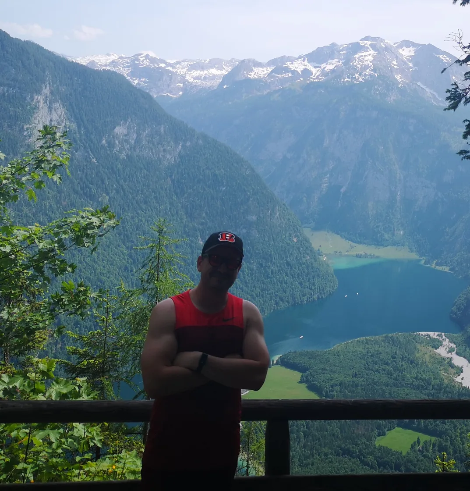

Regelmäßig eingesetzt
HTML · CSS · JavaScript
Responsive Oberflächen, semantische Strukturen und interaktive Funktionen für moderne Webprojekte.
Entwickelt in Augsburg · offen für Remote
Ich bin Florian Dumler. Ich entwickle moderne Webanwendungen und beschäftige mich intensiv mit Python-Automatisierung – strukturiert, neugierig und mit Freude an guten Lösungen.

01 / Ausgewählte Arbeiten
Eigene Anwendungen, Experimente und langfristige Ideen – transparent dokumentiert vom ersten Konzept bis zur nächsten Version.
02 / Kenntnisse
Keine künstlichen Prozentwerte: Ich zeige, womit ich arbeite, was ich vertiefe und wohin ich mich entwickle.
Regelmäßig eingesetzt
Responsive Oberflächen, semantische Strukturen und interaktive Funktionen für moderne Webprojekte.
Derzeit in Vertiefung
Praktische Kenntnisse
Derzeit in Vertiefung
Im Aufbau
03 / Persönlich
Ich bin 38 Jahre alt, technik- und handwerksbegeistert – und überzeugt davon, dass strukturiertes Arbeiten und Kreativität sehr gut zusammenpassen.
Gaming, Technik und frühere berufliche Erfahrungen haben mich schließlich zur Programmierung geführt. Besonders reizen mich die Abwechslung und der Moment, in dem aus einem unübersichtlichen Problem eine klare, funktionierende Lösung wird.
Mein Ziel ist es, dauerhaft in der IT Fuß zu fassen und mich besonders in Full-Stack Development und Python-Automatisierung weiterzuentwickeln.
04 / Weiterbildung
Zertifikate sind für mich kein Endpunkt, sondern dokumentieren Grundlagen, auf denen ich in eigenen Projekten weiter aufbaue.
05 / Kontakt
Aktuell konzentriere ich mich auf eigene Projekte und fachliche Weiterentwicklung. Für Austausch, Feedback und interessante Kontakte bin ich jederzeit offen.